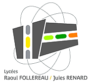
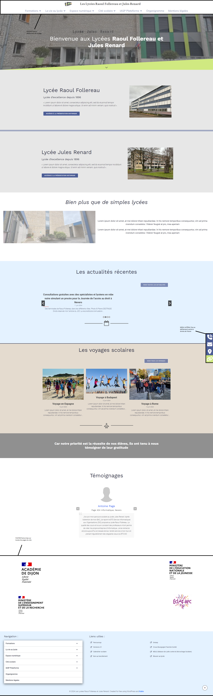

Refonte du site des lycées Raoul Follereau et Jules Renard
Contexte
Les lycées Raoul Follereau et Jules Renard sont deux établissements publics d’enseignement secondaire situés à Nevers, dans la Nièvre. Ils proposent une offre de formation diversifiée, allant de la seconde générale et technologique aux classes préparatoires, en passant par des filières professionnelles et technologiques. Les deux lycées accueillent chaque année plusieurs centaines d’élèves et jouent un rôle central dans la vie éducative et culturelle de la région.
Afin de moderniser leur communication et de faciliter l’accès à l’information pour les élèves, les familles et le personnel, une refonte complète du site web des lycées a été entreprise. L’objectif était de proposer un site moderne, accessible, compatible sur tous supports et répondant aux besoins des différents utilisateurs.
- Présentation des actualités et événements des lycées.
- Accès simplifié aux informations administratives, pédagogiques et pratiques.
- Mise en avant des filières, options et projets menés au sein des établissements.
- Facilitation de la prise de contact et de l’orientation des visiteurs.
Réalisation
- Analyse de l’existant et recueil des besoins auprès de l’équipe de direction et des utilisateurs.
- Proposition de maquettes et d’une nouvelle arborescence pour le site.
- Développement du site en PHP orienté objet avec architecture MVC et base de données MySQL.
- Intégration d’un design responsive pour une consultation sur ordinateur, tablette et mobile.
- Création de modules pour la gestion des actualités, des documents et des contacts.
- Tests utilisateurs et mise en ligne du site.
Capture d'écran

Compétences mobilisées
- - Exploiter des référentiels, normes et standards adoptés par le prestataire informatique (suivi les bonnes pratiques web (normes W3C, accessibilité, compatibilité multi-navigateurs)).
- - Gérer des sauvegardes (sauvegardes régulières du site).
- - Collecter, suivre et orienter des demandes (implémentation d'un formulaire de contact et prise en compte des besoins des professeurs).
- - Participation à l'image numérique des lycées et référencement naturel du site (SEO) avec des outils comme lighthouse.
- - Participation à l'évolution d'un site web exploitant les données de l'organisation
- - Planifier les activités (planification des activités au début avant de commencer le site).
- - Accompagner les utilisateurs dans la mise en place d’un service (documentations complètes avec Scribe).